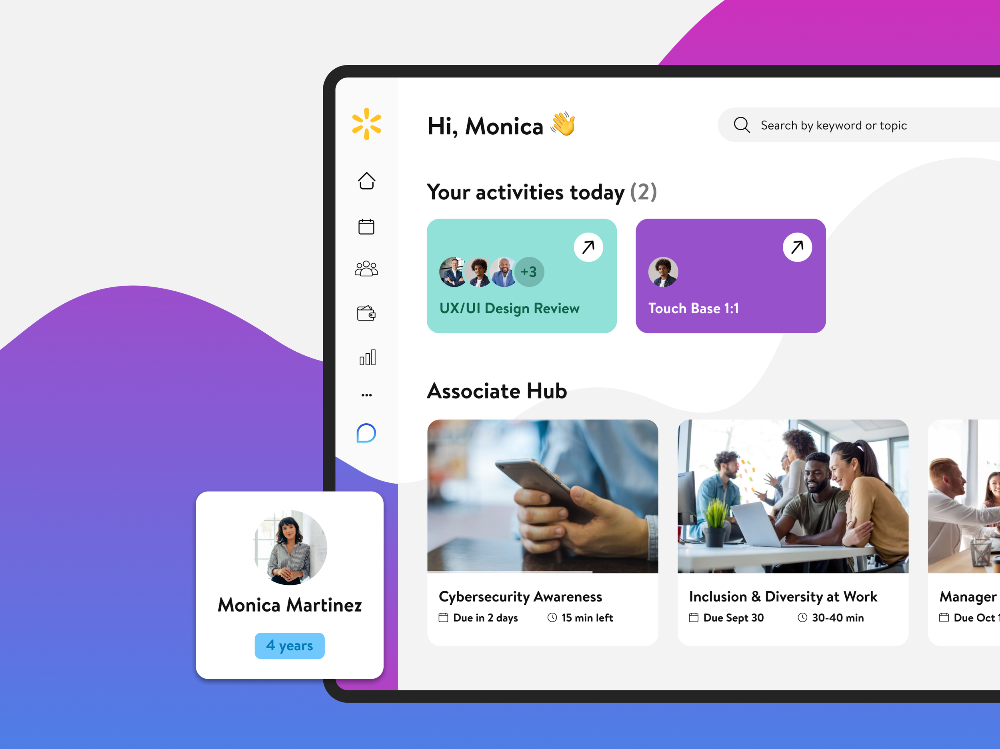

Walmart
A New Home for the
Heart of Campus
A reimagined Me@Campus that brings world-class, consumer-grade design to the everyday tools associates rely on — dynamic, intuitive, and built for the future of work.

Overview
This project began as a spontaneous idea sparked by the inspiration of Walmart's new Home Office campus. While working on a separate feature within the Me@Campus app — an internal tool for corporate associates — I found myself reimagining not just the page I was assigned, but the entire experience. Despite being told a redesign wasn't on the roadmap, I couldn't ignore how disjointed, unintuitive, and visually inconsistent the current product felt.
What started as a side exploration quickly turned into a full-blown concept. I proposed a complete redesign — one that felt modern, dynamic, and aligned to the evolving spirit of Walmart's future. Though it was created before the launch of the new eCommerce brand identity, the proposal resonated deeply with leadership. I was later told the direction earned unanimous praise, with one product leader even saying, "I would love to work in that."
Soon after, the redesign received the green light. Although I was initially positioned to oversee the project, priorities shifted and I was moved to lead work on Hiring. Argo Design was later brought on to take the redesign forward.
Design Thinking
Approaching this project through the lens of both UX and visual systems, I focused on creating an experience that felt both elevated and grounded in associate life. The original app was functional but disconnected — it didn't feel like it belonged to the new era Walmart was stepping into.
Inspired by the energy of the new campus and the idea of creating a more unified workplace experience, I built a direction that was modern, scalable, and emotionally resonant. I leaned into what the app could become: a digital extension of the new Home Office.
By combining research on workplace tools with storytelling techniques and a deep understanding of Walmart's evolving brand, I proposed a design that moved beyond utility. The new direction aimed to foster pride, clarity, and connection — turning a day-to-day tool into a reflection of the culture and community it serves.